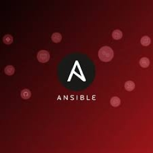

Mes Projets

Déploiement d'un Serveur Windows avec Active Directory
Installation et configuration d'un contrôleur de domaine (AD, GPO) pour l'épreuve du BTS SIO. J'ai pu manipuler certaines tâches et services proposés sur Windows Server. Cet OS m'a permis d'en apprendre davantage sur le fonctionnement d'une infrastructure réseau.
Windows Server
Active Directory
GPO